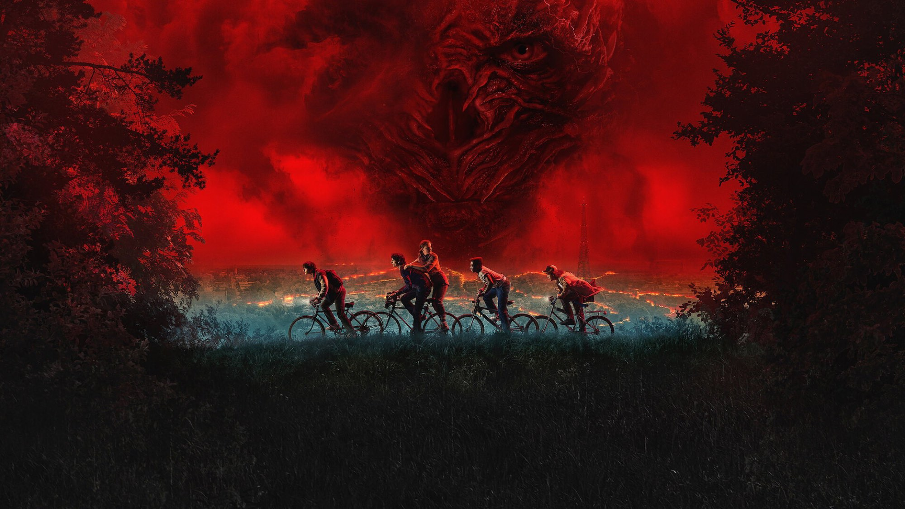

Stranger Things – Stagione 4
Hawkins nel marzo 1986, un mostro che entra nella testa dei ragazzi e una canzone di Kate Bush che li salva: il ciclo più pauroso, e il più gonfio
La quarta stagione di Stranger Things contiene la puntata migliore dell'intera serie e, insieme, la sua struttura più traballante. Quando resta a Hawkins, con un mostro che entra nella testa dei ragazzi e li uccide dentro i loro sensi di colpa, è il racconto dell'orrore che i Duffer inseguivano dal 2016. Quando invece parte per la Russia e la California, si allunga fino a perdere il fiato. Per noi la si guarda per Vecna e per Max, e si sopporta tutto il resto.
Dopo l'estate al neon di Starcourt, i fratelli Duffer cambiano registro senza nasconderlo. Ross Duffer l'ha spiegato con chiarezza: questa volta volevano spingersi molto più a fondo nel territorio dei film horror che amano. E per dirlo scelgono un volto preciso, perché nel cast entra Robert Englund, il Freddy Krueger di Nightmare, nei panni di Victor Creel, un uomo legato a un vecchio delitto della città.
Di cosa parla la quarta stagione di Stranger Things?
Marzo 1986, otto mesi dopo la battaglia di Starcourt. I Byers vivono ora a Lenora Hills insieme a Undici, che però ha perso i poteri. Max si è chiusa in sé stessa perché si sente in colpa per la morte del fratellastro Billy, e passa le giornate con le cuffie del walkman sulle orecchie. A Hawkins una ragazza popolare, Chrissy, muore nella roulotte di Eddie Munson (Joseph Quinn), il capo dell'Hellfire Club, il gruppo di Dungeons & Dragons del liceo, e la città intera gli dà la caccia.
Gli amici rimasti a Hawkins capiscono presto che il colpevole non è umano: è una creatura del Sottosopra che battezzano Vecna. Ed è crudele perché sceglie adolescenti tormentati da un dolore segreto, li fa sognare a occhi aperti e poi li spezza. Seguendo le sue vittime, la pista porta alla casa dei Creel, teatro di un omicidio negli anni Cinquanta. Hopper, che tutti credevano morto, è invece prigioniero in un campo sovietico in Kamčatka, perciò Joyce parte con il complottista Murray per riportarlo a casa. Undici, infine, finisce in una base nascosta nel Nevada, dove il dottor Owens la immerge in una vasca di deprivazione sensoriale per farle ritrovare i poteri, e dove la aspetta il dottor Brenner.

La scena che vale la stagione
Sta in «Caro Billy», diretto da Shawn Levy su sceneggiatura di Paul Dichter. Max ha capito di essere la prossima vittima, perciò scrive lettere d'addio agli amici e si fa accompagnare al cimitero, davanti alla tomba di Billy. Mentre legge la lettera al fratello, la voce le si incrina e Vecna la porta via: il corpo resta lì, fra le lapidi, e si solleva da terra, ma la mente precipita in un Sottosopra rosso, fatto di ricordi deformati. Nancy e Robin, dall'altra parte della città, hanno appena scoperto che la musica preferita di una persona può strapparla al mostro. Allora Lucas preme il tasto del walkman e parte Running Up That Hill di Kate Bush.
Da lì la puntata diventa una corsa vera: Max fugge nel buio mentre attorno a lei si aprono, come finestre, i momenti felici con gli amici, e corre verso di loro. La scelta del brano non è casuale, perché cambia il modo in cui si guarda la scena. Kate Bush ha costruito Running Up That Hill attorno a un desiderio preciso: fare un patto con Dio per scambiarsi di posto con la persona che si ama, così da capirla davvero. Max, che si sente colpevole di essere viva al posto di Billy, sta correndo dentro quella canzone.
La nostra sintesiAl cimitero di Hawkins Stranger Things scopre che il mostro più spaventoso è quello che i ragazzi si portano già dentro, e una cassetta di Kate Bush basta a tenergli testa.
Cosa funziona
Prima di tutto Vecna. Dopo il Demogorgone e il Mind Flayer, che erano bestie senza parole, finalmente il nemico parla e ha un piano, quindi fa paura in un modo nuovo, con un attacco che somiglia a quello di Freddy Krueger: entra nella mente delle vittime quando sono sveglie, nei momenti di debolezza. Jamie Campbell Bower gli dà una calma glaciale, e il trucco della creatura, con la pelle che sembra fatta di radici, ci convince più di qualsiasi mostro digitale delle stagioni passate. E c'è Eddie Munson, il metallaro che tutti scambiano per un assassino e che invece è il personaggio più generoso del racconto. Joseph Quinn lo fa ridere e tremare nella stessa scena, e alla fine gli regala il momento più spavaldo, quando imbraccia la chitarra e attacca Master of Puppets dei Metallica nel cielo rosso del Sottosopra.
Funziona, infine, Sadie Sink. Max era sempre stata la ragazza arrivata da fuori, con lo skateboard e la battuta pronta; qui invece regge il cuore emotivo della stagione con un gesto piccolo, le cuffie che non toglie mai, come una porta chiusa verso il mondo. Ma al cimitero, quando la voce le si spezza davanti alla tomba di Billy, capiamo che quelle cuffie erano l'unico modo per non sentire il proprio dolore.
Cosa non funziona
Il problema, però, è il peso. La stagione corre su quattro binari diversi, ma solo quello di Hawkins ha davvero qualcosa da dire. La storia di Hopper in prigione, per esempio, si trascina per puntate intere mentre Joyce e Murray inseguono guardie corrotte, quindi arriva allo scontro con un Demogorgone quando ormai l'abbiamo quasi dimenticata. Il ramo californiano, poi, lascia i fratelli Byers quasi senza niente da fare, come passeggeri di una storia che appartiene ad altri. Anche Den of Geek, che la mette a metà classifica fra le stagioni della serie, lo ha scritto: saltare da un continente all'altro, e poi nel Sottosopra, dà la sensazione di un racconto troppo pieno.
Poi c'è la durata. Le puntate somigliano a film, e il finale ancora di più. Ma la lunghezza non porta profondità, porta effetti visivi. L'esempio più chiaro è il Demogorgone che Hopper affronta nel carcere sovietico: la creatura è spettacolare, eppure la guardiamo senza ansia, perché di quella prigionia ci importa ormai poco. BadTaste lo notava già il 23 maggio 2022, recensendo i primi capitoli in anteprima: per stirare la trama su puntate così lunghe, la serie sembra a tratti avvitarsi su sé stessa.
La quarta stagione rispetto alle altre
Il confronto più utile è doppio. Rispetto alla terza, quella del centro commerciale e dei russi da film d'azione, qui i Duffer smettono di fare commedia e tornano alla paura domestica della prima stagione, quando il Sottosopra entrava in casa Byers attraverso le pareti. Ma adesso il mostro non rapisce un bambino nel bosco: aspetta che un adolescente resti solo con il suo lutto. È il ritorno all'orrore vero che alla terza mancava, ma dentro un racconto due volte più grande. Rimane però un limite di fondo, ed è il motivo per cui non la mettiamo sopra la prima: più che una storia compiuta, la quarta stagione prepara l'ultima, e lo si sente soprattutto nei due capitoli finali, costruiti per lasciare Hawkins sull'orlo dell'abisso.
In cifre, la quarta stagione è la più grande della serie. Le riprese cominciarono nel febbraio 2020, si fermarono per la pandemia da marzo a settembre e finirono nel settembre 2021, con circa 30 milioni di dollari spesi a puntata. «Caro Billy» dura 78 minuti, il finale circa due ore e mezza, con più effetti visivi dell'intera terza stagione. La critica l'ha accolta bene ma senza entusiasmi nuovi: 69 su 100 su Metacritic per le prime sette puntate e 74 per gli ultimi due, l'88% di recensioni positive su Rotten Tomatoes contro l'89% della terza. Il pubblico, invece, ha risposto come mai prima: 1,352 miliardi di ore viste nei primi 28 giorni, seconda solo a Squid Game fra le serie Netflix, e 13 candidature agli Emmy per il primo blocco, con 5 premi. Sadie Sink ha vinto il premio della Hollywood Critics Association come miglior attrice non protagonista in una serie drammatica in streaming, e Running Up That Hill, cresciuta di oltre l'8.700% in streaming, è tornata prima nel Regno Unito, la seconda volta per Kate Bush dopo Wuthering Heights nel 1978.
A chi la consigliamo, e a chi no
La consigliamo a chi era rimasto deluso dal tono leggero della terza stagione e voleva rivedere Stranger Things fare paura sul serio, e a chi è cresciuto con l'horror degli anni Ottanta: la presenza di Robert Englund è un omaggio esplicito. Ve la sconsigliamo, invece, se avete poco tempo, perché le nove puntate superano di molto la durata dei cicli precedenti e le parti in Russia chiedono pazienza. Attenzione però ai più giovani, perché le morti delle vittime di Vecna sono le scene più crude della serie fino a quel momento. L'intera serie è su Netflix.
La quarta stagione di Stranger Things ha il mostro migliore della serie e una puntata, «Caro Billy», che da sola vale l'abbonamento. Ma quattro storie parallele e capitoli lunghi come film la rendono pesante proprio dove dovrebbe correre. Va vista per Max e per Vecna, ma sapendo che la Kamčatka andrebbe dimezzata.
Domande frequenti
Quanti episodi ha la quarta stagione di Stranger Things?
Nove, usciti su Netflix in due blocchi: i primi sette il 27 maggio 2022, gli ultimi due il 1 luglio 2022. Il capitolo finale dura circa due ore e mezza.
In quale episodio di Stranger Things 4 c'è Running Up That Hill?
La canzone di Kate Bush accompagna Max per tutta la stagione, ma la scena che l'ha resa celebre è nella puntata numero 4, «Caro Billy», diretta da Shawn Levy.
Dove vedere la quarta stagione di Stranger Things?
L'intera serie, dal 2016 al finale del 2025, è disponibile in abbonamento su Netflix.
Fonti consultate (8)
- Wikipedia – Stranger Things season 4
- Wikipedia – Episodi di Stranger Things (quarta stagione)
- Wikipedia – Chapter Four: Dear Billy
- Wikipedia – Running Up That Hill
- BadTaste – Stranger Things 4, volume 1: la recensione (23 maggio 2022)
- Den of Geek – Ranking every season of Stranger Things
- Wikipedia – Stranger Things season 3
- TMDB – scheda e dove vederlo in Italia